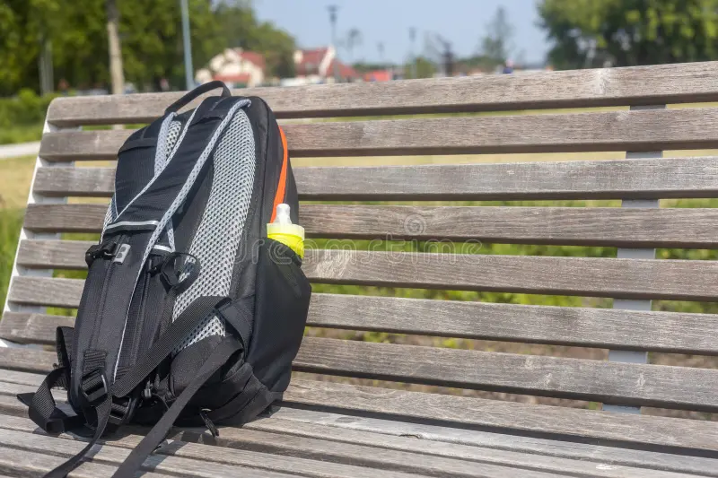

Recent Items

Lost Wallet
Lost near 1st floor.
Found Keys
Found in Ground.

Lost Bag
Lost in Ground.
Your college’s official Lost & Found platform
Misplaced something on campus? Or did you find an item that isn’t yours?
“Find It” makes it easy for students to report lost items, check
found items, and reconnect belongings with their rightful owners.
Start searching today and help your friends and classmates
recover what’s missing!
Lost near 1st floor.
Found in Ground.
Lost in Ground.
"I found my lost wallet within a day! Amazing service."
"Reporting lost items is super easy and quick. Highly recommended."
"I found my keys thanks to this website. Very reliable!"
"I found my keys thanks to this website. Very reliable!"
"Excellent platform for tracking lost items. Saved me a lot of stress."
"The website is very user-friendly and fast. Loved it!"